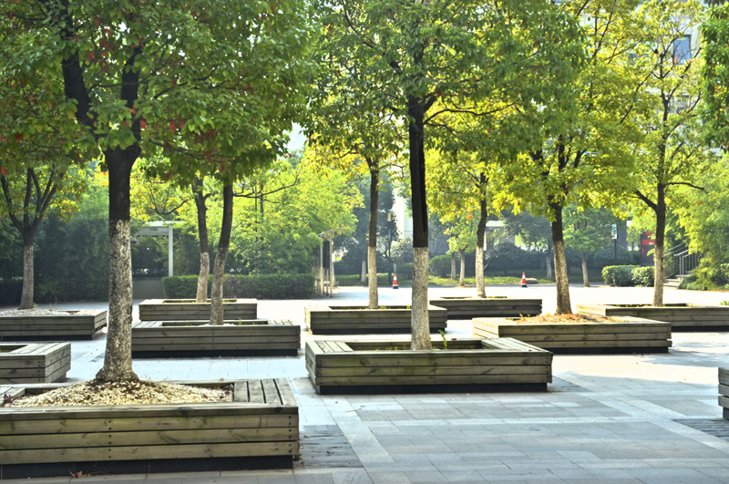
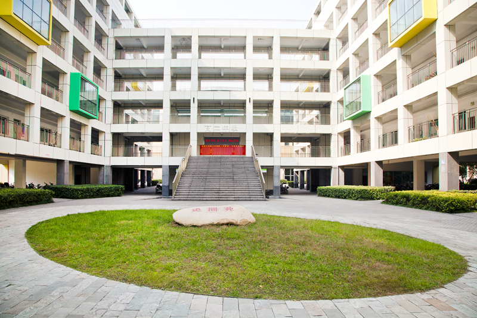

Who Am I?
Hi! I'm Jinghui (Albert) Yang (杨景辉). You may pronounce my name as "Jeeng-whee."
I’m a third-year PhD student in mathematics at the University of Pennsylvania, advised by Mona Merling and XiaoLin Danny Shi.
Office: 3C15 DRLB (UPenn) and C-406 Padelford (UW).
Email: yangjh at sas dot upenn dot edu
I have two parallel areas of interest: homotopy theory and algebraic K-theory/topological cyclic homology. Specifically, I am interested in computations in algebraic K-theory via topological cyclic homology, as well as in computations within chromatic/equivariant (stable) homotopy theory and synthetic spectra.
I will visit the University of Washington for the academic year 2025-2026.
I am co-hosting the online seminar on Computational Methods in Algebraic K-theory in Fall 2025. See here.
I was the co-organizer of the online seminar on Motivic Homotopy Theory in Summer 2025. See here.
I was the co-organizer of the seminar on Homological Mirror Symmetry in Oxford, Jun-Sep 2022. See here.
Watch this funny video about the Klein bottle made by myself!
Education
Ph.D. in Mathematics, University of Pennsylvania, Aug 2023-present.
Advisor: Mona Merling, XiaoLin Danny Shi.

M.S. in Mathematics, University of Oxford, Jul 2022.
Research Experience for Undergraduates, University of Chicago, Jun 2020 - Oct 2020.
Advisors: Peter May, Hana Jia Kong.
B.S. in Mathematics, University of Illinois, Urbana-Champaign, Aug 2018 - May 2021.
I was awarded the Most Outstanding Student in Mathematics Major, Mar 2021. More Details...

I received my high school diploma from Hefei No.8 High School, Anhui, China. There, I spent three years and met my girlfriend.
 Papers and Preprints
- Very effective algebraic and hermitian K-theory of the cyclic group of order two, with Prerna Dhankhar, Rebecca Field, Arjun Nigam, and J.D. Quigley. arXiv:2509.25006.
In preparation
- Atiyah Real K-theory of \( C_2 \)-equivariant projective spaces, with Manyi Guo, Jackson Morris, Alexander Waugh.
- The Hurewicz image of \( C_2 \)-equivariant \( H\underline{\mathbb{F}_2} \), with Bertrand J. Guillou, Manyi Guo, Daniel C. Isaksen, Yunze Lu, Sihao Ma, Yuchen Wu, Zhouli Xu, Shangjie Zhang.
Past Events
- Synthetic Spectra. Remote, online. Notes on basics in synthetic spectra and computations of synthetic spectra.
- \( \infty \)-categories Seminar. Reading seminar at Penn, Fall 2024. See this webpage: \( \infty \)-categories Seminar. All topics and notes are collected on the webpage.
- Equivariant Homotopy Theory. Reading seminar at Penn, Spring 2024. Supervisor: Mona Merling.
- Talks on the Intro to equivariant homotopy theory, Smith theory, geometric fixed points, slice spectral sequences, and Atiyah's Real K-theory.
- Notes on general equivariant topology, geometric fixed points, slice spectral sequence, and Atiyah's \( KR \).
- The typed notes and exercises are under construction.
- Homotopy Theory Seminar. Seminar at Fudan University and SCMS, Fall 2023. Supervisor: Guozhen Wang.
- Two talks on the J-homomorphism (Adams J(X) series). Notes here (part 1) and here (part 2).
- The typed notes and exercises are under construction.
- Hopf Ring Seminar. eCHT online seminar, see here.
- Talk on the Dieudonné theory. Notes here.
- Topological Hochschild Homology and Trace Method. Reading seminar at Penn, Fall 2023. Supervisor: Mona Merling.
- Talk on the classical approach to the trace method. Handwritten Notes.
- Algebraic K-theory. Reading seminar at Penn, Fall 2023. See this webpage: Math 999: Algebraic K-theory. All topics and notes are collected on the webpage.
- Chromatic Homotopy Theory. Seminar at Fudan University and SCMS, Fall 2022. Supervisor: Guozhen Wang.
- Talk on the thick subcategory theorem. handwritten lecture. typed notes.
Talks
- Intro to motivic homotopy theory, Feb 2025, at AMTRaK at UVA. Notes here.
- Tensor-triangulated geometry. Feb 2025, at Penn.
- Topological cyclic homology of local fields, Nov 2024, at eCHT Kan seminar. Slides here.
- Intro to equivariant homotopy theory, Sep 2024, at AMTRaK. Notes here. Note that we use the spectral Mackey functor approach.
- The cyclotomic trace and Dundas-Goodwillie-McCarthy theorem, Aug 2024. Talbot 2024.
- Goerss-Hopkins obstruction theory, Jun 2024, at Penn. Notes here.
- From Exotic Spheres to Stable Homotopy Theory, Feb 2024, at Penn. Slides here.
- The Trace Method in Algebraic K-theory, Nov 2023. BUGCAT conference, Binghamton University. Slides here.
Course Notes
- These notes may contain typos or mistakes. They are primarily for my own understanding of the lecture materials. Use at your own risk!
- Fall 2020:
Math 514: Complex Algebraic Geometry Taught by Prof. Pierre Albin. Notes - Spring 2020:
Math 545: Harmonic Analysis Taught by Prof. Xiaochun Li. Notes - Miscellaneous
Teaching
- Math 2400: Calculus, Part III, Summer 2025.
- Math 3610: Advanced Calculus II, Spring 2025.
- Math 6000: Topology and Geometric Analysis, Fall 2024.
My Skills
Before transferring to the math major, I was a student in CS major. Here are some of the programming languages I can master with a corresponding skill level visualized in the progress bar.
LaTeX
Java
HTML5
Python
C
MATLAB
Quick Links
- Seminars:
Mini Courses in Slice Spectral Sequences
IWoAT (Summer School & Conference in Algebraic Topology)
electronic Computational Homotopy Theory (eCHT)
Seminar on Homological Mirror Symmetry
Prismatic / THH, TC Reading List - Calendars:
University of Illinois, Urbana-Champaign: here
University of Chicago: here
University of Oxford, Topology: here
University of Pennsylvania: here - Fun Facts:
I was the moderator of Baidu "高等数学吧" from 2018-2021. My ID is 御坂5286. I greatly enjoyed calculating challenging integrals and infinite series during that time. I participated in and organized several online integrals/series contests. This post documents these events: Click here
我在2018-2021年是百度“高等数学吧”吧主，我的贴吧ID叫御坂5286。我曾经非常喜欢计算各种奇怪的积分和级数。我参加并举办了几次积分/级数竞赛，这个帖子收录了这些活动。点击跳转
Astrophotography
I am a big fan of astronomy. Previously, I was the president of the astronomy club at the university. Below are some photographs (taken by members) of the observation of the Gemini Meteor Shower in Huairou, Beijing, organized by me in Dec 2017.
{kind=link}
{kind=link}
{kind=link}
{kind=link}
{kind=link}
{kind=link}